In this document we demonstrate the adaptive solution of the Young Laplace equation with contact angle boundary conditions. We start by reviewing the physical background in the context of a representative model problem, and then discuss the spine-based representation of free contact lines and the implementation of the contact angle boundary condition along such lines.
A model problem
The figure below shows a sketch of a T-junction in a microchannel with a rectangular cross-section. (The front wall has been removed for clarity). Fluid is being pushed quasi-steadily along the (vertical) main channel and is in the process of entering the T-junction. We assume that the air-liquid interface (shown in red) remains pinned at the two sharp edges (at 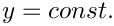) where the channels meet, while the meniscus forms a quasi-static contact angle,  , with the smooth front and back walls.
, with the smooth front and back walls.
It is of interest to determine the maximum pressure that the meniscus can withstand: if the driving pressure is less than that value, the fluid will not be able to propagate past the T-junction.
Theory and implementation
Spine-based representation of the meniscus
Recall that we parametrised the meniscus by two intrinsic coordinates as 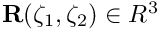, where 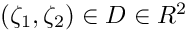. Furthermore, we parametrised the domain boundary,  , by a scalar coordinate
, by a scalar coordinate  so that,
so that,
![\[ {\partial D} = \bigg\{ (\zeta_1,\zeta_2) \ \bigg| \ (\zeta_1,\zeta_2) = \left( \zeta_1^{[\partial D]}(\xi), \ \zeta_2^{[\partial D]}(\xi) \right) \bigg\}. \]](form_6.png)
The normal to the meniscus is then given by
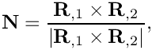
where a comma denotes partial differentiation with respect to one of the intrinsic coordinates, 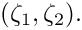
Along the contact line we define two unit vectors, 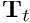 and 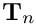, that are tangential to the meniscus. is tangent to the contact line while is normal to it and points away from the meniscus, as shown in the sketch below.
We split the domain boundary  so that 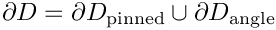 and assume that along 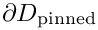 the meniscus is pinned,
so that 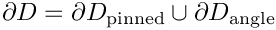 and assume that along 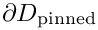 the meniscus is pinned,
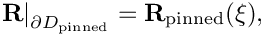
where 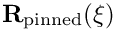 is given. On 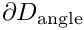 the meniscus meets the wall at a prescribed contact angle  so that
so that
![\[ \left. \left( ({\bf T}_t \times {\bf N}_{\rm wall}) \cdot {\bf T}_n\right) \right|_{\partial D_{angle}} = \cos \gamma, \ \ \ \ \ \ \ \ \ \ \ \ \ \ \ \ \ \ \ \ \ \ (1) \]](form_18.png)
where is the outer unit normal to the wall as shown in this sketch:

The figure also illustrates the spine-based representation of the meniscus in the form
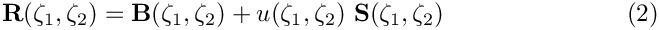
where the spine basis  and spines 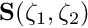 are pre-determined vector fields, chosen such that
and spines 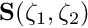 are pre-determined vector fields, chosen such that
- The mapping from
 to
to
is one-to-one, at least for the meniscus shapes of interest.
- Along the parts of the boundary where the contact line is pinned we have
so that the pinned boundary condition may be enforced by setting 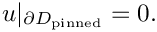
Computation of the contact-angle term in the variational principle
Recall that the variational principle that determines the shape of the meniscus contained the line term
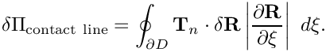
Along 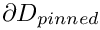 the line integral vanishes because 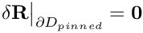. The line integral can therefore be written as
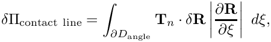
or, using the spine-based representation of the meniscus, (2),
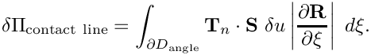
We shall now demonstrate that the integrand in this expression can be expressed in terms of the contact angle boundary condition (1). We start with several observations:
- is tangential to the wall.
- Since is normal to the wall, 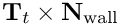 is tangential to the wall and orthogonal to .
 is tangential to the wall and can therefore be decomposed into its components parallel to 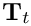 and 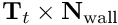 as
is tangential to the wall and can therefore be decomposed into its components parallel to 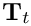 and 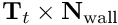 as 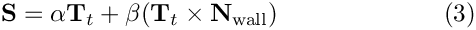
for some values of 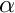 and . In fact,
. In fact, 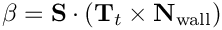
- During the computation it is most convenient to perform all calculations in terms of quantities that are easily obtained from the parametrisation of the meniscus as this avoids having to specify explicitly. For this purpose we exploit that and are tangential to the wall and not parallel to each other (unless the parametrisation of the meniscus by (2) is no longer one-to-one). Therefore can be obtained from quantities that are intrinsic to the meniscus representation via
and thus![\[ {\bf N}_{\rm wall} = \frac{ {\bf S} \times {\bf T}_t } {|{\bf S} \times {\bf T}_t|} \]](form_39.png)
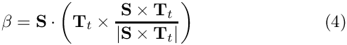
- Given (3) and the fact that 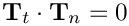, we have
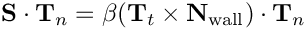
and with (1):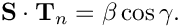
Hence, the line integral may be written as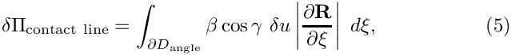
where is given by (4).
is given by (4).
Equation (5) is easily discretised by finite elements. Within oomph-lib, the line integral is decomposed into FaceElements that are attached to the "bulk" Young-Laplace elements that are adjacent to the contact line. The imposition of the contact angle boundary condition for the Young Laplace equation is therefore as easy as the application of Neumann boundary conditions for a Poisson equation, say.
Results
The animation below illustrates the variation in the quasi-steady meniscus shape as the fluid enters the T-junction.
The computation was performed with full spatial adaptivity. The plot below illustrates how the automatic mesh adaptation has strongly refined the mesh towards the corners of the domain where the meniscus shape has a singularity. (The singularity develops because in the corners of the domain the contact angle boundary condition along the side walls is inconsistent with the 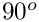 contact angle enforced by the pinned boundary condition along the sharp edges.)

Finally, here is a plot of the "load-displacement diagram", i.e. a plot of the meniscus deflection as a function of its curvature (i.e. the applied pressure drop). The limit point indicates the maximum pressure that can be withstood by the static meniscus.
The driver code
The modifications to the driver code required to impose the contact angle boundary conditions are very similar to those used in other driver codes for problems with Neumann-type boundary conditions. We attach FaceElements to the appropriate faces of the "bulk" Young-Laplace elements detach/re-attach them before and after any spatial adaptation of the "bulk" mesh.
The global namespace
The namespace that defines the problem parameters is very similar to that used in the previous example without contact angle boundary conditions. We provide storage for the cosine of the contact angle, and the prescribed meniscus height that is used by the displacement control method.
As before, we use the spine basis 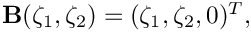 to establish a reference configuration in which the flat meniscus is located in the plane 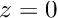 and occupies the domain 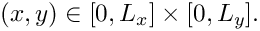
As in the previous example, we rotate the spines in the  -direction to allow the representation of meniscus shapes that cannot be projected onto the
-direction to allow the representation of meniscus shapes that cannot be projected onto the  -plane.
-plane.
The driver code
We start by defining the output directory and open a trace file to record the load-displacement curve.
Next, we create the problem object, refine the mesh uniformly and output the initial guess for the solution: a flat interface which, unlike the previous case, is not a solution of the problem because it does not satisfy the contact-angle boundary condition; see the section Comments and Exercises for a more detailed discussion of this issue.
Finally, we perform a parameter study by slowly incrementing the control displacement and recomputing the meniscus shape.
The problem class
The problem class contains the usual member functions. The functions actions_before_adapt() and actions_after_adapt() are used to detach and re-attach (and rebuild) the contact angle elements on the appropriate boundaries of the "bulk" mesh.
Two private helper functions are provided to create and delete the contact angle elements. The class also provides storage for the pointers to the various meshes, to the node at which the meniscus displacement is prescribed by the displacement control method, and to the Data object whose one-and-only value stores the (unknown) meniscus curvature.
The problem constructor
We start by creating the "bulk" mesh of refineable Young Laplace elements and specify the error estimator.
We identify the node (in the centre of the mesh) at which we apply displacement control. We pass a pointer to this node to the constructor of the displacement control element and store that element in its own mesh.
Next we create the mesh that stores the contact-angle elements. We attach these elements to boundaries 1 and 3 of the "bulk" mesh.
The various sub-meshes are now added to the problem and the global mesh is built.
As usual, we enforce only the essential boundary conditions directly by pinning the meniscus displacement along mesh boundaries 0 and 2:
The build of the "bulk" Young Laplace elements is completed by specifying the function pointers to the spine functions and the pointer to the Data object that stores the curvature.
Finally, we complete the build of the contact line elements by passing the pointer to the double that stores the cosine of the contact angle.
All that's now left to do is to assign the equation numbers:
Creating the contact angle elements
The function create_contact_angle_elements() attaches the FaceElements that apply the contact angle boundary condition to the specified boundary of the "bulk" mesh. Pointers to the newly-created FaceElements are stored in a separate mesh.
Deleting the contact angle elements
The function delete_contact_angle_elements() deletes the contact angle elements and flushes the associated mesh.
Post-processing
We output the load-displacement data, the meniscus shape, and various contact line quantities.
Comments and Exercises
How to generate a good initial guess for the solution
We already commented on the need to provide a "good" initial guess for the solution in order to ensure the convergence of the Newton iteration. In the previous example this was easy because the flat meniscus (clearly a solution of the Young-Laplace equations for zero curvature) also satisfied the boundary conditions. In the present example, and in many others, this is not the case. In such problems it may be difficult to generate initial guesses for the meniscus shape that are sufficiently close to actual solution.
In such cases it may be necessary to compute the initial solution to the problem whose behaviour we wish to investigate during the actual parameter study via a preliminary auxiliary continuation procedure that transforms an easier-solve-problem (for which a good initial guess can be found) into the actual problem.
Explore this approach in the present problem by implementing the following steps:
- Set the contact angle to and solve the problem, using the "flat" meniscus as the initial guess. The "flat" meniscus is, of course, the exact solution for zero control displacement and/or zero curvature.
- Now start a preliminary continuation procedure in which the contact angle is adjusted in small steps until it reaches the desired value. Keep the prescribed control displacement (or the meniscus curvature) constant during this procedure.
- The solution for the desired contact angle may now be used as the initial guess for the actual parameter study in which the control displacement (or the meniscus curvature) are increased while the contact angle is kept fixed.
Limitations of the current approach – suggestions for improvement
One of the main disadvantages of the approach adopted here is that the spine vector fields  and 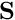 must be specified a priori. For sufficiently complicated meniscus shapes (or for menisci that undergo large changes in shape as their curvature is varied) the choice of suitable spines may be very difficult.
and 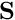 must be specified a priori. For sufficiently complicated meniscus shapes (or for menisci that undergo large changes in shape as their curvature is varied) the choice of suitable spines may be very difficult.
One (possible) solution to this problem could be (we haven't tried it!) to occasionally update the spine representation. For instance, assume that we have computed a meniscus shape in the form
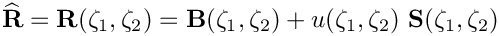
with an associated normal vector 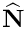. We can reparametrise this shape by setting
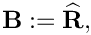
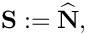
and
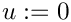
before continuing the computation. Provided this is done sufficiently frequently, i.e. long before the displacement along the spines has become so large that the mapping from  to 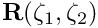 is about to become non-one-to-one, this should allow the computation of arbitrarily large meniscus deflections. Try it out and let us know how it works!
to 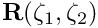 is about to become non-one-to-one, this should allow the computation of arbitrarily large meniscus deflections. Try it out and let us know how it works!
Zero contact angles
Our problem formulation suffers from an additional, more fundamental problem: it cannot be used to solve problems with zero contact angle. This is because for zero contact angles the equilibrium solution is no longer a minimiser of the variational principle: given a solution at which the meniscus meets the wall at zero contact angle, it is always possible to extend the meniscus with an arbitrary-length "collar" along the wall without changing the overall energy of the system. As a result, the position of the contact line becomes increasingly ill-defined as the contact angle is reduced, causing the Newton method to converge very slowly (and ultimately not at all) as 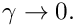
Source files for this tutorial
- The source files for this tutorial are located in the directory:
demo_drivers/young_laplace/
- The driver code is:
demo_drivers/young_laplace/refineable_t_junction.cc
PDF file
A pdf version of this document is available.